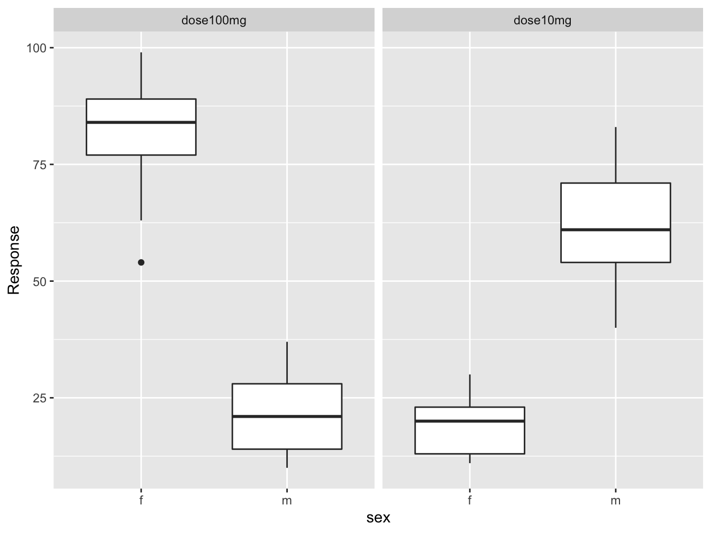

Chapter 4 Data mangling with package dplyr
This package, which is also in the tidyverse, is quite versatile. You can use it for a wide range of activities. Some examples are
- summarizing data; e.g. counting, ranking,
- selecting, filtering and sampling cases
- manipulating data; creating new or changing existing variables
- combining tables
In this chapter only a small selection of this package will be discussed.
There is an excellent cheat sheet for this package. You can find it here. For convenience, primarily because this gitbook is also used in offline mode during examinations, I included it here as well: dplyr-data-transformation.pdf
Before embarking on an overview of the most important functions, let’s first look at the tibble and the %>% chaining operator.
The sections below are copied (and adapted) for in part from the dplyr and tibble vignettes which can be found here and here
In this chapter I will often use the term case instead of row and variable instead of column since they more precisely describe the essence. Also, these terms are used more in the tidyverse packages.
4.1 Tibbles
Tibbles are a modern take on data frames. They keep the features that have stood the test of time, and drop the features that used to be convenient but are now frustrating (i.e. converting character vectors to factors). There is an entire package dedicated to tibbles, not surprisingly called tibble you usually do not have to load the package because dplyr and tidyr do that already (they depend on it themselves).
Use the tibble() constructor to create them as literals. There are several advantages over the old data.frame constructor:
It never changes an input’s type (i.e., no more
stringsAsFactors = FALSE!).It never adjusts the names of variables:
name with spacedoes not becomename.with.space.It evaluates its arguments lazily and sequentially:
tibble(x = 1:5, y = x ^ 2)## # A tibble: 5 x 2 ## x y ## <int> <dbl> ## 1 1 1 ## 2 2 4 ## 3 3 9 ## 4 4 16 ## 5 5 25It never uses
row.names(). The whole point of tidy data is to store variables in a consistent way. So it never stores a variable as special attribute.It only recycles vectors of length 1. This is because recycling vectors of greater lengths is a frequent source of bugs.
Coercion
To complement tibble(), tibble provides as_tibble() to coerce objects into tibbles.
4.1.1 By-row constructor
There is a third function, tribble() that you can use to define a table in an alternative way: row-wise.
tribble(
~colA, ~colB,
"a", 1,
"b", 2,
"c", 3
)## # A tibble: 3 x 2
## colA colB
## <chr> <dbl>
## 1 a 1
## 2 b 2
## 3 c 34.1.2 Tibbles vs data frames
There are three key differences between tibbles and data frames: printing, subsetting, and recycling rules.
Printing
- When you print a tibble, it only shows the first ten rows and all the columns that fit on one screen. It also prints an abbreviated description of the column type, and uses font styles and color for highlighting.
- You can control the default appearance with options:
- options(tibble.print_max = n, tibble.print_min = m): if there are more than n rows, print only the first m rows. Use options(tibble.print_max = Inf) to always show all rows.
- options(tibble.width = Inf) will always print all columns, regardless of the width of the screen.
Subsetting
Tibbles are quite strict about subsetting. [ always returns another tibble. Contrast this with a data frame: sometimes [ returns a data frame and sometimes it just returns a vector.
Recycling
When constructing a tibble, only values of length 1 are recycled. The first column with length different to one determines the number of rows in the tibble, conflicts lead to an error. This also extends to tibbles with zero rows, which is sometimes important for programming:
4.1.3 The str() equivalent: glimpse()
The glimpse() function is the dplyr equivalent of str():
glimpse(dose_response_long)## Rows: 52
## Columns: 4
## $ patient <chr> "001", "002", "003", "004", "005", "006", "007", "008", "009…
## $ sex <fct> f, f, m, m, f, f, f, m, f, m, m, m, m, f, m, f, f, m, m, f, …
## $ Dose <chr> "dose10mg", "dose10mg", "dose10mg", "dose10mg", "dose10mg", …
## $ Response <int> 12, 11, 54, 71, 19, 22, 23, 68, 30, 83, 72, 48, 67, 13, 73, …4.2 The chaining operator %>%
In any workflow, it happens all the time that you apply some function to a dataframe, store the result in a new variable (or overwrite the first) and apply a second function to this dataframe. And so on. There are two undesirable results with this. The first is cluttered code: many variables; how are you going to name them? Just have a look at the previous chapter and you’ll understand. The second -and much worse if you are working with big dataframes- is cluttering of the environment and memory footprint.
This is where the chaining operator comes in. It helps you create clean workflows where intermediate results are only stored when opportune.
It comes down to this simple notion: x %>% f(y)) is equivalent to f(x, y) where f is any function.
Here is the good old dose-response example again, converted to a tibble.
dose_response_long## # A tibble: 52 x 4
## patient sex Dose Response
## <chr> <fct> <chr> <int>
## 1 001 f dose10mg 12
## 2 002 f dose10mg 11
## 3 003 m dose10mg 54
## 4 004 m dose10mg 71
## 5 005 f dose10mg 19
## 6 006 f dose10mg 22
## 7 007 f dose10mg 23
## 8 008 m dose10mg 68
## 9 009 f dose10mg 30
## 10 010 m dose10mg 83
## # … with 42 more rowsSuppose I want to remove cases with missing values (there aren’t any - this is for the sake of argument), select the female subjects and then calculate the mean response for the two doses. In base R, you could do something like this.
dose_response_long_no_na <- na.omit(dose_response_long)
dose_response_long_no_na_only_female <- subset(x = dose_response_long_no_na, subset = sex == "f")
aggregate(Response ~ Dose, data = dose_response_long_no_na_only_female, FUN = mean)## Dose Response
## 1 dose100mg 80.9
## 2 dose10mg 19.6I know, I exaggerated a bit with the variable names.
Here is the same workflow, using dplyr, but with the intermediate variables. It even has an explicit operation extra (group_by()).
dose_response_long_no_na <- drop_na(dose_response_long)
dose_response_long_no_na_only_female <- filter(dose_response_long_no_na, sex == "f")
dose_response_long_no_na_only_female_grouped <- group_by(dose_response_long_no_na_only_female,
Dose)
summarize(dose_response_long_no_na_only_female_grouped, mean_response = mean(Response))## `summarise()` ungrouping output (override with `.groups` argument)## # A tibble: 2 x 2
## Dose mean_response
## <chr> <dbl>
## 1 dose100mg 80.9
## 2 dose10mg 19.6And, finally, how dplyr is supposed to be used.
dose_response_long %>%
drop_na() %>%
filter(sex == "f") %>%
group_by(Dose) %>%
summarize(mean_response = mean(Response))## `summarise()` ungrouping output (override with `.groups` argument)## # A tibble: 2 x 2
## Dose mean_response
## <chr> <dbl>
## 1 dose100mg 80.9
## 2 dose10mg 19.6Isn’t that a treat for your eyes? A highly readable, minimal piece of code, and what’s more - no environment clogged with data you forget to clean up.
Note that drop_na is actually from the tidyr package. However, it works seamlessly in the chaining context of dplyr functions.
This is the power of dplyr and the chaining operator! If you do actually want the result stored, you only need to assign to a single variable at the beginning of the chain.
Does it work with ggplot2 as well?
dose_response_long %>%
drop_na() %>%
ggplot(mapping = aes(x = sex, y = Response)) +
geom_boxplot() +
facet_wrap(Dose ~ .)
I don’t know about you, but this kind of thing makes me happy!
The only thing that bothers me slightly is the + instead of %>% in ggplot2 context.
On the other hand it is layering, not chaining what ggplot2 does, so there is clear distinction.
You have seen the essence of the tidyverse: clean chained workflows.
The sections below are copied (and adapted) for a large part from the dplyr vignette which can be found here
Dplyr aims to provide a function for each basic verb of data manipulation:
filter() and unique() to select cases based on (the uniqueness of) their values.
arrange() to reorder the cases.
select() and rename() to select variables based on their names.
mutate() and transmute() to add new variables that are functions of existing variables.
summarise() to condense multiple values to a single value.
sample_n() and sample_frac() to take random samples.
4.3 Selecting
4.3.1 Selecting rows by index: slice()
If you simply want to select rows by index, use slice()
slice(dose_response_long, 2:4)## # A tibble: 3 x 4
## patient sex Dose Response
## <chr> <fct> <chr> <int>
## 1 002 f dose10mg 11
## 2 003 m dose10mg 54
## 3 004 m dose10mg 71The functions head() and tail() work as expected; they work with tibbles as well (by overloading) and in the context of chained actions.
4.3.2 Get unique cases with distinct()
The distinct() function retains only unique/distinct cases from an input tbl or data.frame. You provide variables to use when determining uniqueness. If there are multiple cases for a given combination of inputs, only the first case will be preserved. If omitted, will use all variables. The .keep_all argument specifies whether all variables in the tbl should be kept.
dose_response_long %>% distinct(sex, Dose, .keep_all = T)## # A tibble: 4 x 4
## patient sex Dose Response
## <chr> <fct> <chr> <int>
## 1 001 f dose10mg 12
## 2 003 m dose10mg 54
## 3 001 f dose100mg 88
## 4 003 m dose100mg 14dose_response_long %>% distinct(Dose)## # A tibble: 2 x 1
## Dose
## <chr>
## 1 dose10mg
## 2 dose100mg4.3.3 filter() cases
This function is similar to the subset argument of the subset() function.
The filter function filter() allows you to select a subset of cases in a data frame. The first argument is the tibble or data frame. The second and subsequent arguments refer to variables within that data frame, selecting cases where the expression is TRUE.
dose_response_long %>% filter(Dose == "dose10mg" & Response > 60)## # A tibble: 7 x 4
## patient sex Dose Response
## <chr> <fct> <chr> <int>
## 1 004 m dose10mg 71
## 2 008 m dose10mg 68
## 3 010 m dose10mg 83
## 4 011 m dose10mg 72
## 5 013 m dose10mg 67
## 6 015 m dose10mg 73
## 7 024 m dose10mg 61When you want to filter rows based on a regular expression pattern matching a character value you can do something like the chunk below, because the only thing select needs is a logical vector.
(t <- tibble(x = c("abb", "bbc", "dbbd", "aacc"), y = 1:4))## # A tibble: 4 x 2
## x y
## <chr> <int>
## 1 abb 1
## 2 bbc 2
## 3 dbbd 3
## 4 aacc 4t %>% filter(grepl("bb", x))## # A tibble: 3 x 2
## x y
## <chr> <int>
## 1 abb 1
## 2 bbc 2
## 3 dbbd 3Using str_detect() from the stringr tidyverse package this is also possible:
t %>% filter(str_detect(x, "bb"))## # A tibble: 3 x 2
## x y
## <chr> <int>
## 1 abb 1
## 2 bbc 2
## 3 dbbd 34.3.4 Selecting variables: select()
This function is similar to the select argument of the subset() function.
Choose variables from a table. Closely related to rename() discussed below; select() keeps only the listed variables and rename() keeps all variables.
When you use the key = value format this will result in a rename of the variable.
select(dose_response_long, patient, gender = sex)## # A tibble: 52 x 2
## patient gender
## <chr> <fct>
## 1 001 f
## 2 002 f
## 3 003 m
## 4 004 m
## 5 005 f
## 6 006 f
## 7 007 f
## 8 008 m
## 9 009 f
## 10 010 m
## # … with 42 more rowsUse the minus sign when you want to select everything but a variable:
select(dose_response_long, -patient, -sex)## # A tibble: 52 x 2
## Dose Response
## <chr> <int>
## 1 dose10mg 12
## 2 dose10mg 11
## 3 dose10mg 54
## 4 dose10mg 71
## 5 dose10mg 19
## 6 dose10mg 22
## 7 dose10mg 23
## 8 dose10mg 68
## 9 dose10mg 30
## 10 dose10mg 83
## # … with 42 more rows## same as
#select(dose_response_long, -c(patient, sex))You can use the colon operator to indicate a range of variables:
select(dose_response_long, patient:Dose)## # A tibble: 52 x 3
## patient sex Dose
## <chr> <fct> <chr>
## 1 001 f dose10mg
## 2 002 f dose10mg
## 3 003 m dose10mg
## 4 004 m dose10mg
## 5 005 f dose10mg
## 6 006 f dose10mg
## 7 007 f dose10mg
## 8 008 m dose10mg
## 9 009 f dose10mg
## 10 010 m dose10mg
## # … with 42 more rows4.3.4.1 Tidyselect helpers
Both with select() and rename() and also with mutate_at() you can use the special helper functions of the tidyselect package:
starts_with(): Starts with a prefix.ends_with(): Ends with a suffix.contains(): Contains a literal string.matches(): Matches a regular expression.num_range(): Matches a numerical range like x01, x02, x03.one_of(): Matches variable names in a character vector.everything(): Matches all variables.last_col(): Select last variable, possibly with an offset.
select(dose_response_long, contains("o"))## # A tibble: 52 x 2
## Dose Response
## <chr> <int>
## 1 dose10mg 12
## 2 dose10mg 11
## 3 dose10mg 54
## 4 dose10mg 71
## 5 dose10mg 19
## 6 dose10mg 22
## 7 dose10mg 23
## 8 dose10mg 68
## 9 dose10mg 30
## 10 dose10mg 83
## # … with 42 more rows4.3.5 Renaming variables: rename()
Rename variables from a table.
dose_response_long %>% rename(Patient = patient, Gender = sex)## # A tibble: 52 x 4
## Patient Gender Dose Response
## <chr> <fct> <chr> <int>
## 1 001 f dose10mg 12
## 2 002 f dose10mg 11
## 3 003 m dose10mg 54
## 4 004 m dose10mg 71
## 5 005 f dose10mg 19
## 6 006 f dose10mg 22
## 7 007 f dose10mg 23
## 8 008 m dose10mg 68
## 9 009 f dose10mg 30
## 10 010 m dose10mg 83
## # … with 42 more rows4.3.6 Selecting from ranked data
The top_n() function makes it easy to select a few cases that based on the ranking of a value:
dose_response_long %>% top_n(3, Response)## # A tibble: 4 x 4
## patient sex Dose Response
## <chr> <fct> <chr> <int>
## 1 005 f dose100mg 89
## 2 006 f dose100mg 99
## 3 017 f dose100mg 96
## 4 021 f dose100mg 89We see 4 cases returned because the third rank is the same for two cases.
This is especially interesting with grouped data:
dose_response_long %>% group_by(Dose) %>% top_n(3, Response)## # A tibble: 7 x 4
## # Groups: Dose [2]
## patient sex Dose Response
## <chr> <fct> <chr> <int>
## 1 010 m dose10mg 83
## 2 011 m dose10mg 72
## 3 015 m dose10mg 73
## 4 005 f dose100mg 89
## 5 006 f dose100mg 99
## 6 017 f dose100mg 96
## 7 021 f dose100mg 894.3.7 Extract a column as vector
Using pull() you can obtain atomic vectors.
pull(dose_response_long, Response)## [1] 12 11 54 71 19 22 23 68 30 83 72 48 67 13 73 20 22 40 57 26 17 29 54 61 57
## [26] 11 88 54 14 21 89 99 69 31 85 18 37 28 16 79 22 84 96 14 12 63 89 77 21 10
## [51] 36 80This is of course the same as dose_response_long[[4]] or dose_response_long$Response but the difference is that pull() can be applied in a %>% pipeline.
With dose_response_long[, 4] it matters whether you are working with a tibble or a dataframe; a tibble returns a tibble and a dataframe returns a vector.
4.3.8 Sorting with arrange()
If you want to sort the rows of a dataframe/tibble by the values of one or more columns, use arrange()
dose_response_long %>% arrange(Response) %>% slice(1:3)## # A tibble: 3 x 4
## patient sex Dose Response
## <chr> <fct> <chr> <int>
## 1 024 m dose100mg 10
## 2 002 f dose10mg 11
## 3 026 f dose10mg 11Use the function desc() to reverse the ordering
dose_response_long %>% arrange(desc(Response)) %>% head(1)## # A tibble: 1 x 4
## patient sex Dose Response
## <chr> <fct> <chr> <int>
## 1 006 f dose100mg 99Note that the previous chunk is equivalent to this
dose_response_long %>% top_n(1, Response)## # A tibble: 1 x 4
## patient sex Dose Response
## <chr> <fct> <chr> <int>
## 1 006 f dose100mg 99So natural ordering is from low to high, but the top_n() function always orders from high to low. You can reverse this as well using the desc() function.
4.3.9 Random sampling
There are two functions available for random sampling: sample_n() and sample_frac().
sample_frac(dose_response_long, 0.05, replace = TRUE)## # A tibble: 3 x 4
## patient sex Dose Response
## <chr> <fct> <chr> <int>
## 1 014 f dose100mg 79
## 2 020 f dose10mg 26
## 3 022 f dose100mg 77The workings of sample_n() are obvious I guess.
4.4 Adding and changing variables
4.4.1 Window functions
A new variable is usually the result of some operation on one or more previous variables. The data in an original variables is processed such that for each old value a new value is generated. Functions that carry out this kind of operation are called window functions. Thus, window functions are functions that take a vector and return another vector of the same length.
For instance, the cumsum() function returns the cumulative sum of a numeric vector:
cumsum(1:5)## [1] 1 3 6 10 15Here are the main window functions. Note that some of them come from base R. Later you will see the use of several of them in concert with the mutate() function.
dplyr::lead
Copy with values shifted by 1.lead(c(1, 4, 2, 8))## [1] 4 2 8 NAdplyr::lag
Copy with values lagged by 1.lag(c(1, 4, 2, 8))## [1] NA 1 4 2dplyr::min_rank
Ranks on values, from low to high. Usedesc()to reverse.min_rank(c(5, 4, 2, 8))## [1] 3 2 1 4dplyr::ntile
Bin vector into n buckets.ntile(c(5, 4, 2, 8, 1), 3)## [1] 2 2 1 3 1dplyr::between
Are values between a and b?between(c(5, 4, 2, 8, 1), 3, 5)## [1] TRUE TRUE FALSE FALSE FALSEdplyr::cummean
Cumulative meancummean(c(5, 4, 2, 8, 1))## [1] 5.00 4.50 3.67 4.75 4.00cumsum
Cumulative sumcumsum(c(5, 4, 2, 8, 1))## [1] 5 9 11 19 20cummax
Cumulative maximumcummax(c(5, 4, 2, 8, 1))## [1] 5 5 5 8 8cummin
Cumulative minimumcummin(c(5, 4, 2, 8, 1))## [1] 5 4 2 2 1cumprod
Cumulative productcumprod(c(5, 4, 2, 8, 1))## [1] 5 20 40 320 320pmax
Element-wise maximumpmax(c(5, 4, 2, 8, 1), c(2, 2, 3, 4, 3))## [1] 5 4 3 8 3pmin
Element-wise minimumpmin(c(5, 4, 2, 8, 1), c(2, 2, 3, 4, 3))## [1] 2 2 2 4 1
4.4.2 Add one or more variables: mutate()
The function mutate() can be used to calculate and append one or more columns.The window functions from the previous section are often-used helpers.
For instance, given the ChickWeight dataset which shows weight gain for 50 chicks:
chicks <- as_tibble(ChickWeight)
chicks %>% head(5)## # A tibble: 5 x 4
## weight Time Chick Diet
## <dbl> <dbl> <ord> <fct>
## 1 42 0 1 1
## 2 51 2 1 1
## 3 59 4 1 1
## 4 64 6 1 1
## 5 76 8 1 1Suppose we want to know the daily weight gain of these chicks (as a challenge, you could try to do this in base R).
Using lag() and mutate() this is a breeze (or so it seems):
(chicks <- chicks %>% mutate(weight_gain = weight - lag(weight)))## # A tibble: 578 x 5
## weight Time Chick Diet weight_gain
## <dbl> <dbl> <ord> <fct> <dbl>
## 1 42 0 1 1 NA
## 2 51 2 1 1 9
## 3 59 4 1 1 8
## 4 64 6 1 1 5
## 5 76 8 1 1 12
## 6 93 10 1 1 17
## 7 106 12 1 1 13
## 8 125 14 1 1 19
## 9 149 16 1 1 24
## 10 171 18 1 1 22
## # … with 568 more rows…but the devil is in the details:
chicks %>% slice(10:15)## # A tibble: 6 x 5
## weight Time Chick Diet weight_gain
## <dbl> <dbl> <ord> <fct> <dbl>
## 1 171 18 1 1 22
## 2 199 20 1 1 28
## 3 205 21 1 1 6
## 4 40 0 2 1 -165
## 5 49 2 2 1 9
## 6 58 4 2 1 9The transition from chick 1 to chick 2 is not taken into account! So to get the weight gain for each chick, we need to split the data first. This is dealt with in a later section but here is a preview:
chicks <- chicks %>%
group_by(Chick) %>% #split on chicks
mutate(weight_gain = weight - lag(weight)) %>%
ungroup() #put together again
slice(chicks, 10:15)## # A tibble: 6 x 5
## weight Time Chick Diet weight_gain
## <dbl> <dbl> <ord> <fct> <dbl>
## 1 171 18 1 1 22
## 2 199 20 1 1 28
## 3 205 21 1 1 6
## 4 40 0 2 1 NA
## 5 49 2 2 1 9
## 6 58 4 2 1 9Can you use a custom function in a mutate context? Of course you can!
my_z <- function(x) {
abs((abs(x - mean(x)) / sd(x)))
}
women %>%
mutate(z_score = my_z(weight)) %>%
head()## height weight z_score
## 1 58 115 1.402
## 2 59 117 1.273
## 3 60 120 1.080
## 4 61 123 0.886
## 5 62 126 0.693
## 6 63 129 0.499And what’s more, you can make multiple columns in one operation where the calculations for the subsequent columns are interdependent.
women %>%
mutate(z_score = my_z(weight),
z_bin = ntile(z_score, 3)) %>%
head()## height weight z_score z_bin
## 1 58 115 1.402 3
## 2 59 117 1.273 3
## 3 60 120 1.080 2
## 4 61 123 0.886 2
## 5 62 126 0.693 2
## 6 63 129 0.499 14.4.3 Create new variables based on more columns
4.4.3.1 mutate_all()
The mutate_all() function is similar to the baser R apply() function.
Its syntax is a bit puzzling at first, and this has not been made easier by the introduction of new ways to code it.
Suppose you want to calculate the log2 of all numeric values in the iris dataset.
In base R you would probably do it like this:
head(apply(iris[, -5], MARGIN = 2, FUN = log2))## Sepal.Length Sepal.Width Petal.Length Petal.Width
## [1,] 2.35 1.81 0.485 -2.32
## [2,] 2.29 1.58 0.485 -2.32
## [3,] 2.23 1.68 0.379 -2.32
## [4,] 2.20 1.63 0.585 -2.32
## [5,] 2.32 1.85 0.485 -2.32
## [6,] 2.43 1.96 0.766 -1.32When you do it with mutate_all() this is the solution you will encounter most in a Google search:
iris %>%
select(-Species) %>%
mutate_all(funs(log2(.))) %>%
head(3)## Warning: `funs()` is deprecated as of dplyr 0.8.0.
## Please use a list of either functions or lambdas:
##
## # Simple named list:
## list(mean = mean, median = median)
##
## # Auto named with `tibble::lst()`:
## tibble::lst(mean, median)
##
## # Using lambdas
## list(~ mean(., trim = .2), ~ median(., na.rm = TRUE))
## This warning is displayed once every 8 hours.
## Call `lifecycle::last_warnings()` to see where this warning was generated.## Sepal.Length Sepal.Width Petal.Length Petal.Width
## 1 2.35 1.81 0.485 -2.32
## 2 2.29 1.58 0.485 -2.32
## 3 2.23 1.68 0.379 -2.32It gives a deprecation warning, so apparently there are new and improved ways to specify the function(s) to be applied. Let’s review these.
A simple named list. This is actually much like the apply() approach.
iris %>%
select(-Species) %>%
mutate_all(list(mean = mean)) %>%
head(2)## Sepal.Length Sepal.Width Petal.Length Petal.Width Sepal.Length_mean
## 1 5.1 3.5 1.4 0.2 5.84
## 2 4.9 3.0 1.4 0.2 5.84
## Sepal.Width_mean Petal.Length_mean Petal.Width_mean
## 1 3.06 3.76 1.2
## 2 3.06 3.76 1.2So this adds 4 additional rows to the selection without Species and generates variable names by appending _mean. This is different from the first approach in that the old variables are kept beside the new ones.
When you supply two functions, e.g. list(mean = mean, sd = sd), a variable is added for another four columns (8 in total).
Personally I do not like this. I like it when a method is called directly, with parentheses.
Auto named with tibble::lst(). This is similar to the previous one; you supply a list of function names. The names of these functions define the postfix of the variable name.
iris %>%
select(-Species) %>%
mutate_all(lst(mean, sd)) %>%
head(2)## Sepal.Length Sepal.Width Petal.Length Petal.Width Sepal.Length_mean
## 1 5.1 3.5 1.4 0.2 5.84
## 2 4.9 3.0 1.4 0.2 5.84
## Sepal.Width_mean Petal.Length_mean Petal.Width_mean Sepal.Length_sd
## 1 3.06 3.76 1.2 0.828
## 2 3.06 3.76 1.2 0.828
## Sepal.Width_sd Petal.Length_sd Petal.Width_sd
## 1 0.436 1.77 0.762
## 2 0.436 1.77 0.762Using lambdas. Lambda’s are anonymous function-like expressions. Although this form is harder to grasp, it does make it easier to pass arguments to the function you want executed by mutate_all (in this case trim = .2 to mean).
iris %>%
select(-Species) %>%
mutate_all(list(~ mean(., trim = 0.2), ~ sd(.))) %>%
head(2)## Sepal.Length Sepal.Width Petal.Length Petal.Width Sepal.Length_mean
## 1 5.1 3.5 1.4 0.2 5.8
## 2 4.9 3.0 1.4 0.2 5.8
## Sepal.Width_mean Petal.Length_mean Petal.Width_mean Sepal.Length_sd
## 1 3.04 3.84 1.2 0.828
## 2 3.04 3.84 1.2 0.828
## Sepal.Width_sd Petal.Length_sd Petal.Width_sd
## 1 0.436 1.77 0.762
## 2 0.436 1.77 0.762The expression ~ mean(., trim = 0.2) is therefore equivalent to something like
function (.) mean(., trim = 0.2) so the tilde is shorthand for function (.)
Strangely enough, when experimenting further, I find that this simple solution also works for a single function to be applied:
iris %>%
select(-Species) %>%
mutate_all(my_z) %>% # or mutate_all(function(x){abs((abs(x - mean(x)) / sd(x)))})
head(2)## Sepal.Length Sepal.Width Petal.Length Petal.Width
## 1 0.898 1.016 1.34 1.31
## 2 1.139 0.132 1.34 1.31Again, this gives only the new variables, not the preexisting ones.
It can be concluded that, whatever the approach, a list of executables of some form needs to be provided. Choose the one of your liking.
4.4.3.2 mutate_at()
In the previous examples, a selection of the numeric columns was required before mutate_all() could be executed. An alternative approach is to use mutate_at() which has an additional argument for the column selection.
iris %>%
mutate_at(vars(contains(".")), my_z) %>%
head(2)## Sepal.Length Sepal.Width Petal.Length Petal.Width Species
## 1 0.898 1.016 1.34 1.31 setosa
## 2 1.139 0.132 1.34 1.31 setosaThe selection can be specified in several ways:
mutate_at(vars(-Species), my_z)mutate_at(1:4, my_z)mutate_at(vars(-Species), my_z)mutate_at(vars(matches("Width|Length")), my_z)mutate_at(vars(contains(".")), my_z)
and there are probably more ways to make a column selection.
You can see that the original variables are replaced with the original variables - that is, in the modified copy of the tibble. As you know it is customary in R to return a modified copy, not to overwrite original data unless you are explicitly saying so.
4.4.3.3 mutate_if()
Even simpler in the case of the iris data is the mutate_if() function. After all, the entire point was to modify the numeric variables:
iris %>%
mutate_if(is.numeric, my_z) %>%
head(2)## Sepal.Length Sepal.Width Petal.Length Petal.Width Species
## 1 0.898 1.016 1.34 1.31 setosa
## 2 1.139 0.132 1.34 1.31 setosa4.4.4 Change a variable: recode() and recode_factor()
These two functions help you to quickly change the values of a variable. Here, the Dose variable is overwritten with new -numeric- values. Note that the original dose_response_long tibble has not been modified!
head(dose_response_long, 2)## # A tibble: 2 x 4
## patient sex Dose Response
## <chr> <fct> <chr> <int>
## 1 001 f dose10mg 12
## 2 002 f dose10mg 11dose_response_long %>%
mutate(Dose = recode(Dose, dose10mg = 10, dose100mg = 100)) %>%
head(2)## # A tibble: 2 x 4
## patient sex Dose Response
## <chr> <fct> <dbl> <int>
## 1 001 f 10 12
## 2 002 f 10 11Similarly, the sex variable can be recoded with the recode_factor() function. In the example below,
- the Response variable is created based on the sex variable,
- the sex variable is deleted and
- the variables are reordered to the original format
dose_response_long %>%
mutate(Gender = recode_factor(sex, f = "female", m = "male"),
sex = NULL) %>%
select(patient, Gender, Dose, Response) %>%
head(3)## # A tibble: 3 x 4
## patient Gender Dose Response
## <chr> <fct> <chr> <int>
## 1 001 female dose10mg 12
## 2 002 female dose10mg 11
## 3 003 male dose10mg 544.5 Operations on groups
Often you want to know something about groups in your data. For instance, in the previous examples with the chickens, it is interesting to know the average weight gain of the chickens for each diet. This is where the group_by() function comes in, and its counterpart ungroup().
One important thing to realize is the group_by() does not split your data. instead, it adds metadata to a tibble (or data.frame) that marks how rows should be grouped. As long as that metadata is there -i.e. you have not called ungroup()- you won’t be able to change the factors of the columns involved in the grouping.
If you really want to split, like the base R split() function, you should use the group_split() function.
4.5.1 group_by() and ungroup()
This is the most used set of grouping functions. It is usually followed by some summary function -discussed below- but sometimes, as in the case of the weight gain outlined in section 4.4.2, you want to progress with all data combined. In that case you need to ungroup again.
Here is the summary use case. No need for ungrouping.
dose_response_long %>%
group_by(sex) %>%
summarise(mean = mean(Response))## `summarise()` ungrouping output (override with `.groups` argument)## # A tibble: 2 x 2
## sex mean
## <fct> <dbl>
## 1 f 50.3
## 2 m 41.7Of course you can group by multiple variables.
dose_response_long %>%
group_by(Dose, sex) %>%
summarize(mean = mean(Response))## `summarise()` regrouping output by 'Dose' (override with `.groups` argument)## # A tibble: 4 x 3
## # Groups: Dose [2]
## Dose sex mean
## <chr> <fct> <dbl>
## 1 dose100mg f 80.9
## 2 dose100mg m 21.5
## 3 dose10mg f 19.6
## 4 dose10mg m 61.9After grouping on a variable, you will sometimes be interested in the top or bottom n rows. The head() function will not work then, surprisingly enough. Suppose you want the bottom 2 responses from both the males and females in the dose100mg group. Surprisingly enough this does not work:
dose_response_long %>%
filter(Dose == "dose100mg") %>%
group_by(sex) %>%
arrange(Response) %>%
head(2) %>%
ungroup() ## # A tibble: 2 x 4
## patient sex Dose Response
## <chr> <fct> <chr> <int>
## 1 024 m dose100mg 10
## 2 019 m dose100mg 12Instead, to select the top n values after grouping you need to use either slice() or filter(row_number() <some-logical-test>). Here is the correct solution.
dose_response_long %>%
filter(Dose == "dose100mg") %>%
group_by(sex) %>%
arrange(Response) %>%
slice(1:2) %>%
#filter(row_number() %in% 1:2) %>% #also works
ungroup() #ungrouping not required but I added it for clarity of code## # A tibble: 4 x 4
## patient sex Dose Response
## <chr> <fct> <chr> <int>
## 1 002 f dose100mg 54
## 2 020 f dose100mg 63
## 3 024 m dose100mg 10
## 4 019 m dose100mg 12Here is rather lengthy use case for ungrouping: the z-score is calculated per sex group, and then there is some Dose-specific calculation before summarizing. This required an ungroup in between.
dose_response_long %>%
group_by(sex) %>%
mutate(Response_Z = my_z(Response)) %>%
ungroup() %>% ##ungroup for other grouping
group_by(Dose) %>%
mutate(Response_scaled = scale(Response)) %>%
summarize(Z = mean(Response_Z), Scaled_Mean_sd = sd(Response_scaled))## `summarise()` ungrouping output (override with `.groups` argument)## # A tibble: 2 x 3
## Dose Z Scaled_Mean_sd
## <chr> <dbl> <dbl>
## 1 dose100mg 0.906 1.00
## 2 dose10mg 0.912 1.004.5.2 group_split() and group_keys()
The group_split() function is equivalent to the base R split() function. But it uses the grouping structure from group_by() and therefore is subject to the data mask. Also, it does not name the elements of the list based on the grouping. So in the example below (unevaluated), split() will return a list with two named elements ($m and $f), but the list returned by group_split() will only be accessible with [[1]] and [[2]].
dose_response_long %>%
group_split(sex)
##same as
split(as.data.frame(dose_response_long), dose_response_long$sex)The last grouping-related function, group_keys(), only returns a tibble explaining the grouping structure:
dose_response_long %>%
group_keys(sex, Dose)## Warning: The `...` argument of `group_keys()` is deprecated as of dplyr 1.0.0.
## Please `group_by()` first
## This warning is displayed once every 8 hours.
## Call `lifecycle::last_warnings()` to see where this warning was generated.## # A tibble: 4 x 2
## sex Dose
## * <fct> <chr>
## 1 f dose100mg
## 2 f dose10mg
## 3 m dose100mg
## 4 m dose10mg4.5.3 Apply a function to each group
group_map(), group_modify() and group_walk() are functions that can be used to iterate grouped tibbles.
group_modify()returns a grouped tibble. Therefore the supplied function must return a data frame/tibble to be able to combine the results of the individual subsets.group_map()returns a list of results, each element being the result of calling the supplied function on each groupgroup_walk()calls the supplied function for side effects and returns the input.tbl, invisibly. This makes it possible to, for instance, print the intermediate results or write them to file without breaking the workflow.
Here is an example of group_map(). As you can see it takes a lambda expression as seen before:
dose_response_long %>%
group_by(Dose) %>%
group_map(~ quantile(.x$Response, probs = seq(0, 1, 0.2)))## [[1]]
## 0% 20% 40% 60% 80% 100%
## 10 18 31 69 85 99
##
## [[2]]
## 0% 20% 40% 60% 80% 100%
## 11 19 26 54 67 83Use group_walk() when you only want to have a peek at each group before processing further.
dose_response_long %>%
group_by(Dose) %>%
group_walk(~ print(head(.x, 2))) %>%
summarise(avg = mean(Response))## # A tibble: 2 x 3
## patient sex Response
## <chr> <fct> <int>
## 1 001 f 88
## 2 002 f 54
## # A tibble: 2 x 3
## patient sex Response
## <chr> <fct> <int>
## 1 001 f 12
## 2 002 f 11## `summarise()` ungrouping output (override with `.groups` argument)## # A tibble: 2 x 2
## Dose avg
## <chr> <dbl>
## 1 dose100mg 51.2
## 2 dose10mg 40.84.6 Summarizing and counting
You have seen the summarize() function at work a few times. In essence, it creates one or more summary statistics, for each group, if existing.
For instance, to calculate the mean and SD of relative weight gain for different diets, this is the workflow for it:
chicks %>%
group_by(Chick) %>% #split on chicks
mutate(rel_weight_gain = (weight - lag(weight))/weight) %>%
ungroup() %>%
group_by(Diet) %>%
summarize(mean_rel_gain = mean(rel_weight_gain, na.rm = T),
sd = sd(rel_weight_gain, na.rm = T))## `summarise()` ungrouping output (override with `.groups` argument)## # A tibble: 4 x 3
## Diet mean_rel_gain sd
## <fct> <dbl> <dbl>
## 1 1 0.111 0.0743
## 2 2 0.131 0.0742
## 3 3 0.153 0.0657
## 4 4 0.142 0.0748There is an equivalent that creates a summary for a group of variables: summarize_all(), summarize_at() and summareize_if() which are analogous to the mutate_xxx() methods. Here is one example.
iris %>%
summarize_if(is.numeric, list(mean = mean, sd = sd))## Sepal.Length_mean Sepal.Width_mean Petal.Length_mean Petal.Width_mean
## 1 5.84 3.06 3.76 1.2
## Sepal.Length_sd Sepal.Width_sd Petal.Length_sd Petal.Width_sd
## 1 0.828 0.436 1.77 0.762You should be able to figure out the rest of them by now.
4.6.0.1 Simple counting of occurrences
An often used operation is simple counting of occurrences of course:
dose_response_long %>%
group_by(sex, Dose) %>%
summarize(count = n())## `summarise()` regrouping output by 'sex' (override with `.groups` argument)## # A tibble: 4 x 3
## # Groups: sex [2]
## sex Dose count
## <fct> <chr> <int>
## 1 f dose100mg 13
## 2 f dose10mg 13
## 3 m dose100mg 13
## 4 m dose10mg 13There is a shorthand for this type of count: tally():
dose_response_long %>%
group_by(sex, Dose) %>%
tally()## # A tibble: 4 x 3
## # Groups: sex [2]
## sex Dose n
## <fct> <chr> <int>
## 1 f dose100mg 13
## 2 f dose10mg 13
## 3 m dose100mg 13
## 4 m dose10mg 13And even shorter is this:
dose_response_long %>%
count(sex, Dose)## # A tibble: 4 x 3
## sex Dose n
## <fct> <chr> <int>
## 1 f dose100mg 13
## 2 f dose10mg 13
## 3 m dose100mg 13
## 4 m dose10mg 13When you want the counts sorted, use the sort = TRUE argument to count, e.g.
mtcars %>% count(cyl, sort = TRUE)
If you want such a count as a column in your dataset, use add_tally() or add_count()
dose_response_long %>%
group_by(sex) %>%
add_tally()## # A tibble: 52 x 5
## # Groups: sex [2]
## patient sex Dose Response n
## <chr> <fct> <chr> <int> <int>
## 1 001 f dose10mg 12 26
## 2 002 f dose10mg 11 26
## 3 003 m dose10mg 54 26
## 4 004 m dose10mg 71 26
## 5 005 f dose10mg 19 26
## 6 006 f dose10mg 22 26
## 7 007 f dose10mg 23 26
## 8 008 m dose10mg 68 26
## 9 009 f dose10mg 30 26
## 10 010 m dose10mg 83 26
## # … with 42 more rows##same as below, but slightly more readable:
#add_count(sex)add_count() is useful for groupwise filtering, for instance when you want to show details of the group that occurs the least.
mtcars %>%
add_count(cyl) %>%
filter(n == min(n)) %>%
select(1:5, n)## mpg cyl disp hp drat n
## 1 21.0 6 160 110 3.90 7
## 2 21.0 6 160 110 3.90 7
## 3 21.4 6 258 110 3.08 7
## 4 18.1 6 225 105 2.76 7
## 5 19.2 6 168 123 3.92 7
## 6 17.8 6 168 123 3.92 7
## 7 19.7 6 145 175 3.62 74.7 Combining data
4.7.1 Merging
There are a few functions, left_join(), right_join(), inner_join(), full_join(); only full_join() is discussed here; the others are variations behaving differently with missing data in one or the other data frames to combine. In base R you have merge() that is responsible for this kind of operations.
Suppose you have two tibbles:
(trA <- tribble(
~ID, ~var1,
"a", 4,
"b", 6,
"c", 1,
))## # A tibble: 3 x 2
## ID var1
## <chr> <dbl>
## 1 a 4
## 2 b 6
## 3 c 1(trB <- tribble(
~ID, ~var2,
"a", 7,
"b", 3,
"d", 5
))## # A tibble: 3 x 2
## ID var2
## <chr> <dbl>
## 1 a 7
## 2 b 3
## 3 d 5Since there is a common variable “ID” we can simply combine these two into a single tibble:
full_join(trA, trB, by = "ID")## # A tibble: 4 x 3
## ID var1 var2
## <chr> <dbl> <dbl>
## 1 a 4 7
## 2 b 6 3
## 3 c 1 NA
## 4 d NA 5When the column names differ you can specify it as full_join(x, y, by = c("a" = "b")) which will match variable a on tibble x to variable b on tibble y.
You can of course also do this in a workflow setting:
trA %>% full_join(trB, by = "ID")## # A tibble: 4 x 3
## ID var1 var2
## <chr> <dbl> <dbl>
## 1 a 4 7
## 2 b 6 3
## 3 c 1 NA
## 4 d NA 54.7.2 Adding rows and columns
To add rows, use bind_rows() and to add columns, use bind_cols() have a look at the docs for the details. They are pretty much self-explanatory, and analogous to the base R cbind() and rbind() functions.